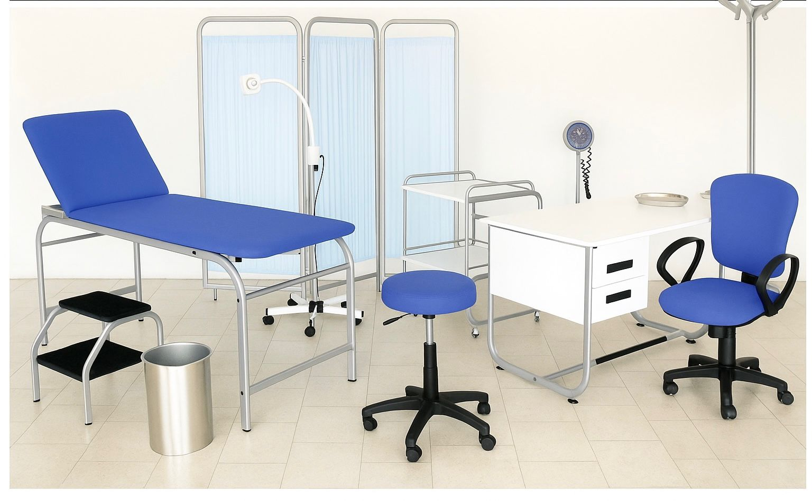

Website modern pentru clinici și cabinete medicale.

Acest website a fost realizat pentru un cabinet medical modern, oferind pacienților posibilitatea de a afla informații despre servicii, medici și de a programa consultații online. Designul este curat, profesional și inspiră încredere, fiind optimizat pentru toate dispozitivele.